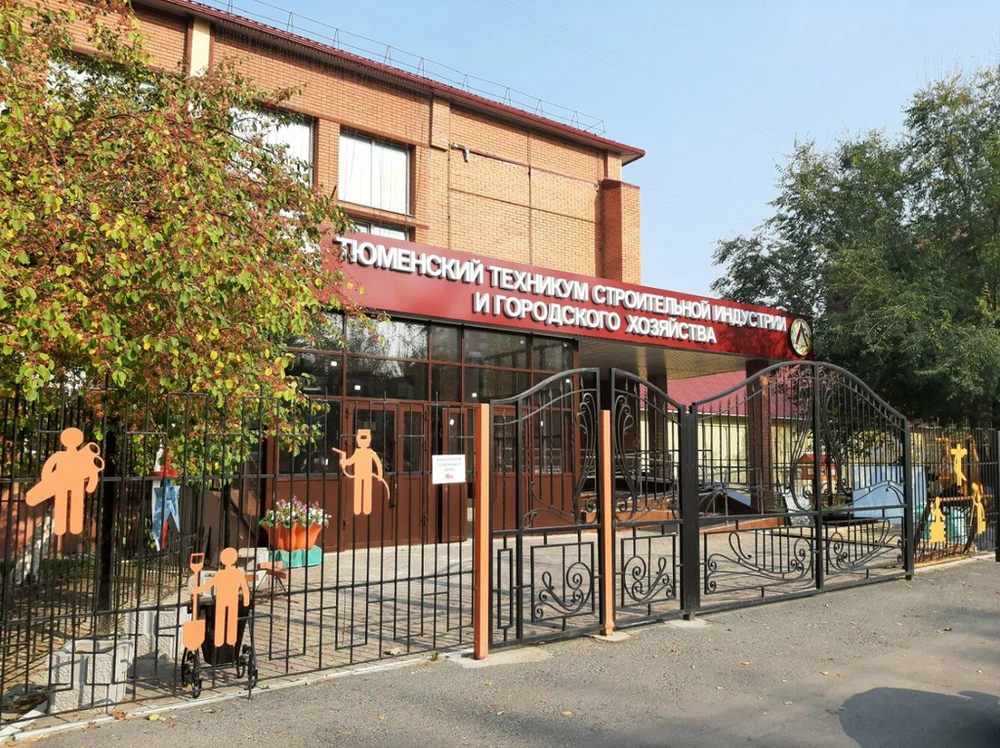

О техникуме
Государственное автономное профессиональное образовательное учреждение Тюменской области «Тюменский техникум строительной индустрии и городского хозяйства» создан в мае 2010 г. на базе одного из старейших учреждений профессионального образования Тюменской области — ГОУ НПО «Профессиональное училище № 6».
История создания учебного учреждения начинается в октябре 1947 года, когда на базе Тюменского завода № 639 Министерства судостроения была открыта школа фабрично-заводского обучения (ФЗО) № 8. В 1958 г. школа ФЗО № 8 была реорганизована в строительное училище № 1 с двухгодичным сроком обучения по профессиям: маляр, штукатур, столяр.

Новости
-
25.05.2026
Профилактические видеоролики от Генеральной прокуратуры
-
15.05.2026
Профориентационный фестиваль МАЯК 2026
-
20.04.2026
Победитель регионального этапа Всероссийского конкурса «Мастер года 2026»!
-
08.04.2026
Подготовка к участию в региональном этапе Всероссийского конкурса «Мастер года»